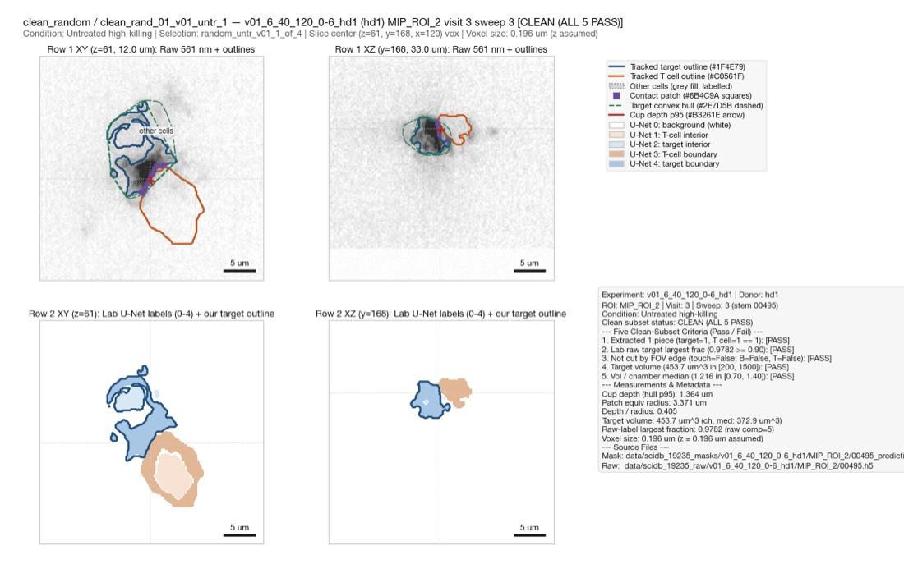

clean_rand_01_v01_untr_1 (clean_random)
#clean_rand_01_v01_untr_1
Chamber movie
Review verdicts (1)
| Reviewer | Verdict | Tags | Note | Timestamp |
|---|---|---|---|---|
| claude | problem | misaligned | Target mask extends well beyond the raw target signal (upper region has no signal). | 2026-10-28T20:32:28 |
Numbers
| Metric | Value |
|---|---|
| Group | clean_random |
| Panel ID | clean_rand_01_v01_untr_1 |
| Selection | random_untr_v01_1_of_4 |
| Experiment | v01_6_40_120_0-6_hd1 |
| Donor | hd1 |
| Chamber | MIP_ROI_2 |
| Visit | 3 |
| Sweep | 3 |
| Stem | 00495 |
| Condition | Untreated high-killing |
| Is clean | True |
| First failed criterion | 0 |
| Failed criteria all | NONE |
| Pass c1 pieces extracted | True |
| Pass c2 raw largest frac | True |
| Pass c3 not fov edge | True |
| Pass c4 plausible vol | True |
| Pass c5 vol ratio median | True |
| Target n components | 1 |
| Tcell n components | 1 |
| Target raw n components | 5 |
| Target raw largest frac | 0.978236 |
| Target touches fov edge | False |
| Tcell touches fov edge | False |
| Touches fov edge | False |
| Target volume (um^3) | 453.673 |
| Chamber median target vol um3 | 372.942 |
| Target vol ratio to own median | 1.21647 |
| Cup depth hull p95 (um) | 1.3637 |
| Patch equiv radius (um) | 3.371 |
| Cup depth / radius | 0.405 |
| Voxel pitch (um) | 0.1962 |
| Slice Z center (vox) | 61 |
| Slice Y center (vox) | 168 |
| Slice xc vox | 120 |
| Has raw h5 | True |
| Panel kb | 238.9 |